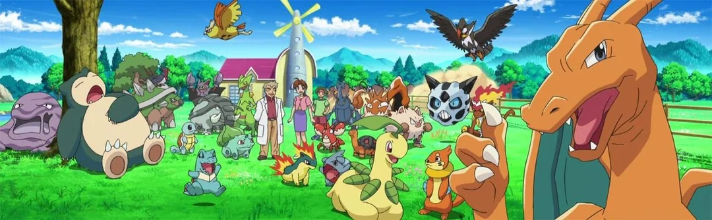
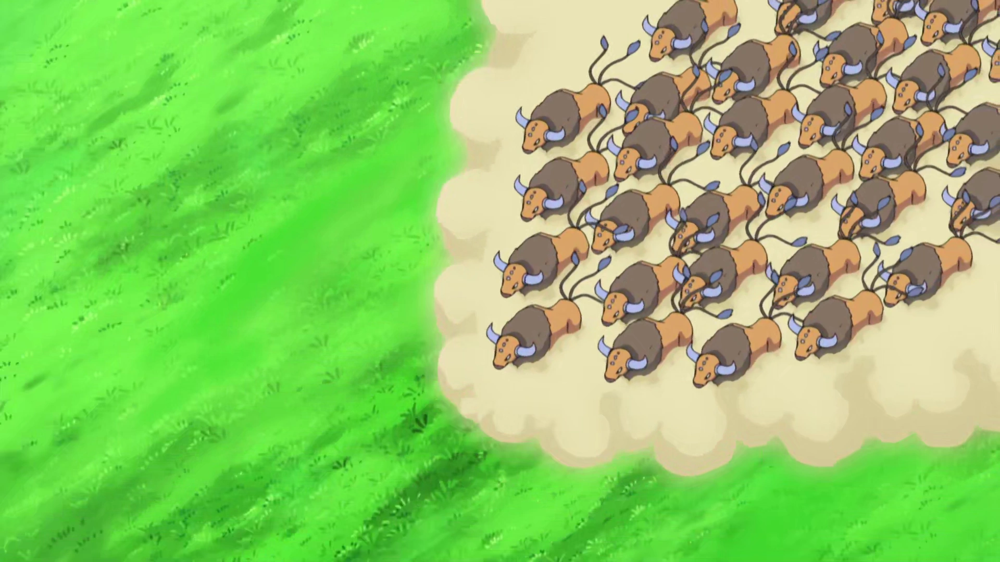

Mis Compañeros Pokémon
Estos son todos mis compañeros que me han acompañado en mis aventuras:

- Pikachu:
Mi primer Pokémon y compañero inseparable; siempre lleno de energía y valentía, capaz de darlo todo en cada combate y en cada aventura.
- Bulbasaur:
Siempre ha sido uno de mis Pokémon más leales; incluso ayudaba a mantener la paz entre los demás en el laboratorio del Profesor Oak.
Aunque puede evolucionar, decidió seguir siendo fuerte a su manera.
- Charizard:
Uno de los más poderosos que he tenido; al principio no me obedecía, pero juntos superamos eso.
Lo dejé en el Valle Charicífico para que entrenara y sacara todo su potencial.
- Squirtle:
Mi amigo del Escuadrón Squirtle, siempre listo para ayudar y apagar incendios. Aunque lidera su equipo,
cuando vuelve pelea con la misma energía de siempre.
- Muk:
Vive en el laboratorio y le encanta abrazar al Profesor Oak… aunque casi lo deja sin aire.
En combate demostró ser mucho más fuerte de lo que parece.
- Snorlax:
Puede parecer que solo duerme y come, pero cuando lucha es imparable.
Ganó combates increíbles a pesar de quedarse dormido en medio de ellos.
- Heracross:
Siempre intenta chupar la savia de Bulbasaur, pero en batalla es un gran luchador. Me ayudó mucho en la Liga Johto.
- Bayleef:
Antes era Chikorita y siempre fue muy cariñosa conmigo… ¡a veces demasiado! Evolucionó demostrando lo fuerte y decidida que es.
- Quilava:
Cuando era Cyndaquil ya confiaba mucho en él; su evolución aumentó su velocidad y poder. Siempre fue un combatiente muy valiente.
- Totodile:
Alegre y lleno de energía, nunca deja de bailar incluso antes de pelear. Puede parecer juguetón, pero da grandes sorpresas en combate.
- Noctowl:
No es un Noctowl cualquiera, es variocolor. Su inteligencia y ataques psíquicos me ayudaron a ganar combates muy difíciles.
- Donphan:
Lo capturé cuando aún era Phanpy y demostró su fuerza desde pequeño. Al evolucionar se convirtió en una auténtica potencia defensiva.
- Kingler:
Al principio era Krabby y casi no lo usaba, pero en la Liga Indigo arrasó con varios rivales seguidos. Su evolución fue impresionante.
- Swellow:
Nunca se rinde, incluso cuando está agotado sigue luchando. Su velocidad fue clave en muchos combates en Hoenn.
- Sceptile:
Orgulloso y serio, pero con un gran corazón. Fue el único que logró derrotar a un Darkrai en la Liga Sinnoh.
- Corphish:
Siempre competitivo y listo para pelear. Aunque es pequeño, tiene una determinación enorme.
- Torkoal:
Muy sensible y llora con facilidad, pero su poder de fuego es increíble. Resistió combates muy duros en Hoenn.
- Glalie:
Evolucionó en pleno combate y cambió el rumbo de la batalla. Su poder de hielo fue decisivo en la Liga Hoenn.
- Unfezant:
Fuerte y veloz en el aire, fue clave en muchos combates en Unova. Siempre luchó con elegancia y determinación.
- Snivy:
Muy orgullosa y segura de sí misma, incluso desobedecía a veces porque sabía lo fuerte que era. Le encantaba demostrarlo en batalla.
- Pignite:
Evolucionó para proteger a sus amigos y se volvió mucho más poderoso. Su pasado con su antiguo entrenador lo hizo aún más decidido.
- Oshawott:
Siempre sale de su Poké Ball por su cuenta y quiere ser el mejor. Aunque es torpe a veces, nunca deja de intentarlo.
- Scraggy:
Nació de un Huevo y desde pequeño quiso pelear con todos. Fue creciendo hasta convertirse en un luchador resistente.
- Leavanny:
Cuida de sus compañeros como si fuera su madre. Su combinación de velocidad y estrategia me dio muchas victorias.
- Palpitoad:
Muy fuerte bajo el agua y en tierra. Su resistencia lo hizo ideal para combates largos.
- Boldore:
Un Pokémon sólido y confiable; su poder aumentó mucho tras evolucionar de Roggenrola. Siempre dio la cara en los momentos difíciles.
- Krookodile:
Pasó de ser un Sandile travieso a un líder fuerte y seguro. Siempre llevaba sus gafas y tenía una gran presencia en batalla.
- Goodra:
Es uno de los más cariñosos que he tenido, pero también uno de los más fuertes. Llegó a ser el líder de su grupo antes de volver conmigo.
- Noivern:
Lo crié desde que era un Noibat y siempre fue muy sensible al sonido. Evolucionó en pleno combate demostrando su gran poder.
- Tauros:
Me encantan tanto los Tauros que terminé capturando 30; son ruidosos,
llenos de energía y siempre compitiendo entre ellos mostrando fuerza y determinación.
